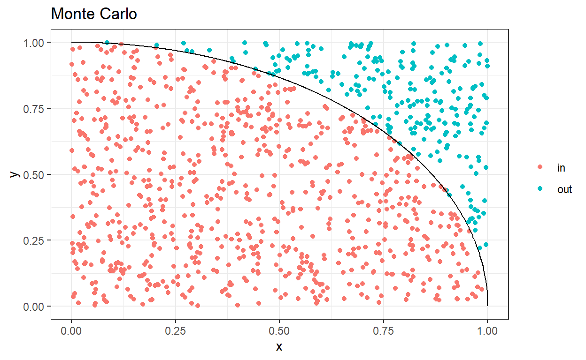

Monte Carlo est un quartier de Monaco connu pour son casino et ses jeux de hasards. Les méthodes de Monte Carlo lui font ainsi référence en ce sens qu’elles permettent d’estimer certaines quantités par tirages aléatoires. Elles s’appuient donc sur le hasard.
Ce premier exercice se propose de calculer \(\pi\) suivant une approche de type Monte Carlo. On se rappelle que \(\pi\) est le rapport de la circonférence du cercle sur le diamètre. On le retrouve dans de nombreuses formules et notamment dans le calcul de l’aire d’un cercle : \[Aire(r)=\pi r^2\] où \(r\) est le rayon du cercle.
Un cercle de rayon \(r\) est défini par le graphe \(\{(x,y): \sqrt{x^2+y^2}=r\}\). Considérons le cercle de rayon \(1\) et donc d’aire \(\pi\). La fonction \(f(x)=\sqrt{1-x^2}\) définie sur \(x\in[0,1]\) défini le quart de cercle droit supérieur.
Preuve Le graphe défini par cette fonction est : \[(x, f(x))=(x, \sqrt{1-x^2}).\] De plus, \[\sqrt{x^2+\sqrt{1-x^2}^2}=\sqrt{x^2+1-x^2}=\sqrt{1}=1=r.\] (On considère le cercle de rayon \(1\)). Ce qui conclut la preuve. \(\blacksquare\)
Son aire est donc égale à \(\pi/4\). Considérons maintenant le carré \([0,1]\times[0,1]\) d’aire évidemment \(1\). Le ratio d’aire entre le cercle et le carré est donc \(\pi/4\).
La procédure est la suivante : échantilloner uniformément dans le carré (x et y uniformément sur [0,1]) et compter le nombre de points qui se trouvent dans le cercle (\(x^2+y^2<1\)). Le ratio ainsi obtenu donnera \(\pi/4\). Il suffit de le multiplier par \(4\) pour obtenir \(\pi\).
library(tidyverse, quietly = TRUE)
N = 1000
samples <- data.frame(x=runif(N, 0, 1), y=runif(N, 0, 1))
samples <- samples %>%
mutate(
circle = if_else(x**2 + y**2 < 1, 'in', 'out')
)
circle <- data.frame(x=seq(0,1, 0.001), y=sqrt(1-seq(0,1,0.001)**2))
ggplot(data = samples, mapping = aes(x=x, y=y, colour=circle)) +
geom_point() +
geom_line(data=circle, colour="black") +
labs(title = 'Monte Carlo') +
theme_bw() +
xlab('x') +
theme(legend.title = element_blank())
# la base de Monte carlo est le tirage aléatoire
N = 1000
samples <- data.frame(x=runif(N, 0, 1), y=runif(N, 0, 1))
computed_pi <- samples %>%
mutate(circle = if_else(x**2 + y**2 < 1, 'in', 'out')) %>%
summarise(pi=sum(circle == "in")/n()) * 4
computed_piRemarque : Calculer l’aire d’un cercle (et donc l’échantillonage précédent) revient à calculer l’intégrale suivante : \[Aire(C)=\int_C 1dxdy=\int_0^1\int_0^{\sqrt{1-y^2}}1dxdy=\int_0^1\sqrt{1-y^2}dy.\] Question 2 : Trouvez la solution de l’intégrale précédente.
La majorité des calculs en probabilité impliquent des intégrales. On a par exemple : \[\mathbb{E}[g(X)]=\int_{\mathcal{X}}g(x)f(x)dx\] où \(g\) est une fonction “mesurable”, \(f\) est la densité de \(X\) par rapport à la mesure de Lebesgue et \(X\in\mathcal{X}\).
Question 1 : Soit une loi normale \(\mathcal{N}(0,1)\), tracer un histogramme pour un échantillon de taille \(1000\).
X <- data.frame(samples=rnorm(1000, 0, 1))ggplot(...) +
geom_histogram(...) +
labs(title = 'Échantillons du modèle gaussien') +
theme_bw() +
xlab('x') +
theme(legend.title = element_blank())X <- data.frame(samples=rnorm(1000, 0, 1))
ggplot(data = X, mapping = aes(samples, y = ..density..)) +
geom_histogram(alpha = 0.5, color = 'black', position = 'identity', bins = 30) +
labs(title = 'Échantillons du modèle gaussien') +
theme_bw() +
xlab('x') +
theme(legend.title = element_blank())Question 2 : En vous appuyant sur l’échantillon précédent, calculer son espérance empirique, sa variance (avec et sans biais). La fonction R var est-elle avec ou sans biais (justifiez) ?
X <- data.frame(samples=rnorm(1000, 0, 1))
my_variance <- function(s, unbiased=TRUE) {
mu = mean(s);
normalization = 1
if (unbiased == TRUE) {
normalization = (nrow(X) - 1) / nrow(X)
}
mean((s-mu)**2) / normalization
}
print(paste('Moyenne empirique:', mean(X$samples)))
print(paste('Ma variance:', my_variance(X$samples)))
print(paste('Ma variance (biaisée):', my_variance(X$samples, unbiased=FALSE)))
print(paste('Variance R:', var(X$samples)))Question 3 : Via notre échantillon, estimer la probabilité de \(|X|>2\).
Concernant, la probabilité que \(|X|>2\) il s’agit de la solution à l’intégrale suivante~: \[\mathbb{P}(|X|>2)=\int_{-\infty}^{-2}f(x)dx + \int_{2}^{\infty}f(x)dx=2\int_{2}^{\infty}f(x)dx\] On la calcule en comptant le nombre de fois qu’un tirage satisfait la propriété relativement au nombre total de tirages.
N=10000
X <- data.frame(samples=rnorm(N, 0, 1))
print(paste('La probabilité empirique est', sum(abs(X)>2)/N))Question 4 : Via notre échantillon, estimer la probabilité de \(|X|>3\).
Question : Soit \(f(x;\mu,\sigma^2)\) la densité de la loi normale. Soit \(g(x)=\frac{1}{3}(f(x;-3,1)+f(x;0,10)+f(x;1;1))\) notre nouvelle densité. On souhaite, le plus simplement possible, calculer son espérance \(\mathbb{E}_{X\sim g}[X]\).
density_g <- function(x){
(dnorm(x, mean = -3, sd = 1) + dnorm(x, mean = 0, sd = sqrt(10)) + dnorm(x, mean = 1, sd = 1))/3
}On se souvient que l’espérance de notre variable est donnée par \(\mathbb{E}[X]=\int x g(x)dx\), malheureusement, on ne sait pas simuler selon \(g(x)\). La méthode d’importance sampling consiste à observer \(\int x g(x)dx=\int \frac{g(x)x}{\gamma(x)}\gamma(x)dx=\mathbb{E}_{X\sim \gamma}[xg(x)/\gamma(x)]\) où \(\gamma\) est connue et permet de simuler (et ne s’annule nulle part).
N = 1000
samples = rnorm(N, mean=0, sd=3)
m <- mean(samples * density_g(samples)/dnorm(samples, mean=0, sd=3))
print(paste("L'espérance empirique est", m))